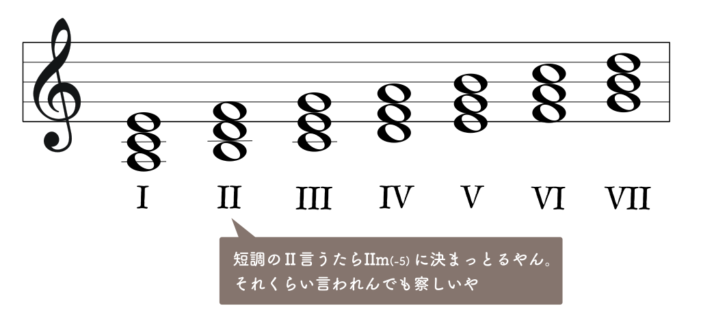
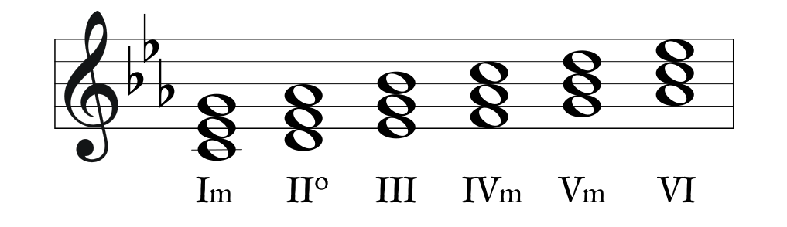
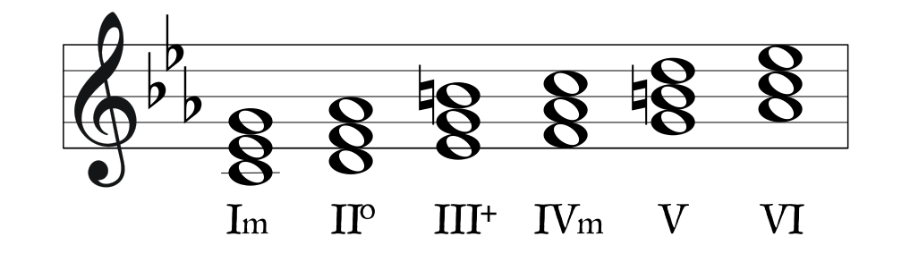
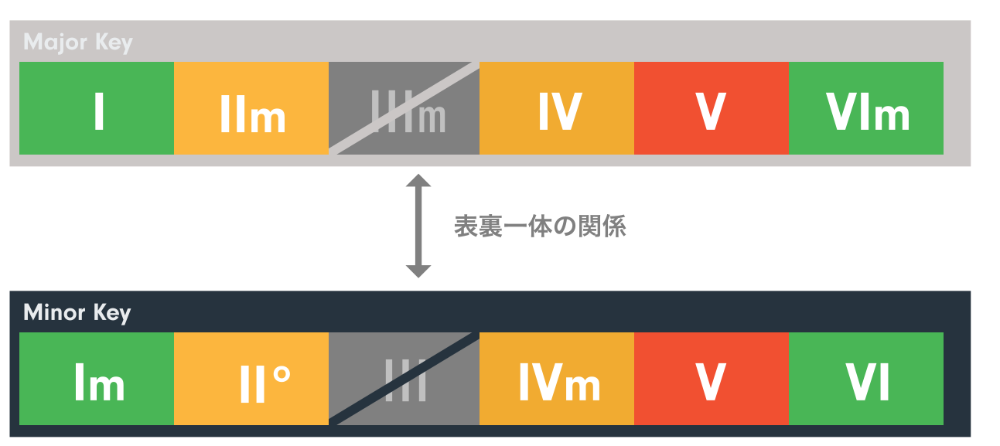
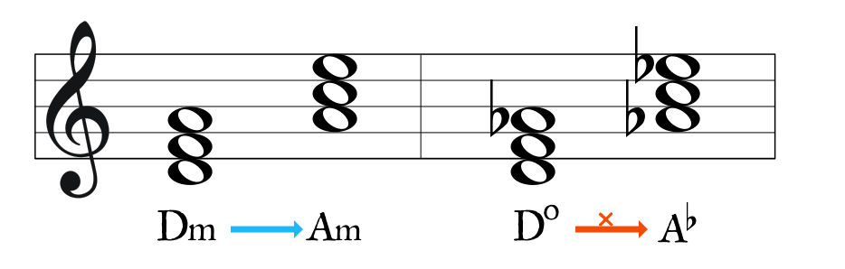

上一篇我们讲解了古典派在大调中的风格样式。本篇我们将剖析小调的体系结构。
关于小调理论，我们不采用大家最为熟悉的C大调的关系小调（平行小调）A小调，而是以同主音小调C小调为基础来展开思考。因为这样更易于与大调展开镜像对比，进而能更深刻地领悟整套体系的精妙。

小调理论自然也是通过级数（度数）标记法来推进的，因此我们首先从这一点讲起。
 1. 小调的级数标记法
1. 小调的级数标记法
此前我们一直沿用“小调 ＝ 以VIm为领袖的世界”这一公式。这是因为在大小调界限流动的现代流行音乐中，这种视角的方方面面都最为合理实用。
然而如果沿用这种做法，就绝对无法真正领悟古典小调中那种在明暗之间构成鲜明对比的严谨美学。从这里开始，我们将遵循正统传统，采用在小调中将作为核心领袖的小和弦称为第I级和弦的方法。
在C小调中，C小三和弦就是“I级和弦”，以此类推分配各个级数如下：

与大调一样，第VII级和弦原则上不作为独立和弦使用。从流行音乐的视角来看，舍弃无所不能的B♭和弦未免显得有些暴殄天物，但这却是古典派体系运转所不可或缺的一环。 相反，在大调中被当作异类嫌弃的减三和弦（平五音小三和弦），此时则堂堂正正地作为“第II级和弦”加入了主力阵容。在现阶段大家可能还不太理解这套体系的设计意图，但随着阅读的深入，个中奥妙会逐步揭晓。
关于细致的标记法
顺便提一下，在古典和声学专著中，主流通常是大胆地只写数字。写下“II”就意味着IIm(-5)，写下“IV”就代表IVm。


这种标记法具有巨大优势，即“常规状态与变音状态被清晰明确地区分开来”。只要没有脱离调内的基本和弦群，在进行和声分析时，谱面下就只会整整齐齐地排列着“I, II, III……”等纯数字。作品分析因此显得极其简洁明了。
流行音乐理论在解释小调时，由于III与VI的根音带有降号，往往会标上♭III、♭VI等符号，但在古典和声理论中并不需要这样繁琐的记号。
那么有人可能会产生疑问：如果在C小调语境下真要指代大三和弦的“D”，或者真正没有降号的“A”时该怎么办呢？对此古典理论另配有一套专用的临时变音标记来应对。
本文所采用的标记
在此选用何种标记确实让人权衡良久，但考虑到易读性与亲和力，我们决定不把和弦性质（Chord Quality）省略得过于彻底。


虽然在传统文献中鲜见这种混合标记风格，但对于习惯了现代流行理论的我们而言，这应当是最为平衡、直观的表达方式。
2. 古典小调的基干和弦
古典派小调最著名的核心特征之一，就是摒弃自然小音阶，原则上以使用和声小音阶或旋律小音阶为基准。通过将第vii级音升高、人为强制创造出导音，从而构筑起坚不可摧的“小调帝国”，我们在旋律篇中已经阐述过这个逻辑。

由于将这一原则贯彻始终，作为骨架的基干和弦自然也发生了变化：原有的Vm被大三和弦化，作为大三和弦的V来使用。

关于III级和弦
既然如此，III级和弦所包含的那个Si音（还原B）该如何处理呢？事实上，在古典小调中，III级和弦的地位与形态相当微妙复杂。
在19至20世纪的许多西方理论书籍中，普遍认为III级和弦的Si音也会加上还原号，从而构成增三和弦（Augmented Chord）[1]。


然而在实际的乐曲流动中，它有时并不构成aug，而是作为普通的大三和弦出现。归根结底，和声小音阶与旋律小音阶的基本原则是“上行时音符发生变音，而下行时则保持原样”。因此，当下行旋律中出现III级和弦时……

像这样，它并不构成增三和弦，而是呈现为纯粹的大三和弦，这也是理论上的常见阐述[2]。 此外还可以考虑其他几种用法模式，也就是说III级和弦的结构具有情境敏感性（Context-Sensitive），取决于具体的音乐语境。
或许正是因为这种行为机制的复杂多变，在古典派音乐中III级和弦无论如何都不太受欢迎。许多古典理论专著在入门阶段几乎对III级和弦闭口不谈；而在《岛冈和声》中，也是将小调的III与大调的III一样，在原则上将其作为禁用和弦来推进理论构建的。

A小调的情况
作为参考，在A小调中呈现如下：为了将V级变为大三和弦，附加上了升号。

在大调中被视为“怪异分子”而被剔除的减五音和弦，在小调中被正式接纳为基础和弦的核心成员。同时还有一个时刻附着临时变音记号的成员。真是一个极富个性的团队配置。
人工创造导音的历史
这种“人工创造导音”的实践历史极其悠久，其起源远在古典派理论确立之前。虽然确切的起始时间已不可考，但最迟在巴洛克之前的“文艺复兴”时期的作品中，就已经能明确发现“人工导音”的存在。

这是16世纪作曲家阿德里安·维拉尔特（Adrian Willaert）的作品。在这段短小的谱例中，同时包含了自然小音阶与和声小音阶的音响。或许这一时期正是历史的转折点。 彼时距离拉莫出生还有漫长的岁月，调性组织与终止式理论尚未建立，因此我们可以推测，最初开始使用这种“人工导音”的动机，很可能纯粹出于对悦耳听觉的美学追求。
3. 小调中的TDS功能分类
基干和弦确定后，接下来是功能分类，而这与大调时完全一致。也就是说，I与VI属于主功能（Tonic），II与IV属于下属功能（Subdominant），V属于属功能（Dominant）。

请注意，这里所说的“完全一致”，并不是指与关系大调E♭大调一致，而是与同主音大调C大调完全镜像对应。这是与流行音乐理论存在本质决裂的极端关键之处。
重视同主音调对称的世界
如果顺着我们平时的思维惯性，用E♭大调的视角来审视上述TDS分类，就会觉得有些不可思议：

其一，极其不稳定的IIo居然被划分为下属功能；其二，平时大家最熟悉的下属和弦A♭竟然被归为了主功能。这是理解古典派风格极其重大的枢纽，因此我们逐一深入剖析。
IIm(-5)属于下属功能
在大调中，第II个和弦的作用是替代IV级和弦蓄势充能，并顺畅连接到属和弦V。在小调中，这一职责交由IIm(-5)来履行。

这种和弦通过强进行（五度下行）解决是标准程式，此外几乎没有其他用法，我们在第III章中已有阐述。既然被安置在属和弦之前，理所当然被视为下属功能（前置属）。这么一说确实顺理成章。
这里的公平性考量
顺便提一句，在上一篇大调中提到“IIm只能进行到V”时，或许有人会想：“咦，进行到I或者VIm不也挺好的吗？非常普遍呀”。但这里的关键核心依然是与同主音调的对称公平性。
在小调中，IIm(-5)由于其音程性质，确实除了走向V之外别无他途。既然如此，为了统一步调，大调也应该保持同步——理论体系的构建很可能融入了这种深层美学考量[3]。
 II-V无论在大调还是小调中都成立……
II-V无论在大调还是小调中都成立……


为什么要如此煞费苦心地建立对称对等的秩序？稍后深入阅读就会明白其深意所在。
小调的重属和弦
顺带一提，小调中的II级和弦也可以转变为大三和弦，作为“重属和弦（DD / V/V）”来使用。这与大调完全一致。

正如重属和弦在古典派大调中饱受宠爱一样，这个和弦也是为古典派小调刻下鲜明烙印的核心和弦之一。
VI级和弦属于主功能
这里真正展现出极度奇特的一面：在古典派小调中，VI级和弦被视为主功能，用于“伪终止（阻碍终止）”。在C小调中A♭属于主功能，这与流行音乐及爵士乐理论的观念彻底决裂。
让我们通过听觉来实际验证一下A♭能否胜任伪终止的使命。

像上面这样常见的典型乐句中，我们尝试将最后的Im替换为VI来执行伪终止。

听感正是如此。确实，“大小性质发生了颠覆”，而且“原本稳固扎实的着地感被巧妙削弱”，完美符合伪终止应有的心理期待。
在C小调中的这种“G→A♭”进行，在爵士乐和现代流行理论中往往会被判定为“从属到下属的逆行（倒退）”，但对古典派而言这非但没有任何违和，反而被解读为光明正大、典雅绝伦的“小调伪终止”。
用VI实现伪终止的实际范例
实际上，这类和弦进行的实例在古典音乐作品中俯拾皆是。
这是海顿的《第52交响曲》。请关注第7-8小节的动态：低音声部按照 1-3-4-5 的轨迹推进，原本极具毫无悬念的落定趋势，但在第8小节却赫然走向了VI级和弦。虽然音响显得飘逸悬浮、终止感较为薄弱，但它本就是“伪”终止，因此终止感的削弱从本质上讲完全不成问题。
4. 小调的和弦进行样式
既然各个和弦的角色已经被整理得与大调完全对称，那么和弦进行的样式逻辑自然也完全相同。

整理成表格也是完全对应的，与大调毫无二致：
| 原和弦 | 目标和弦 |
|---|---|
| Im | 所有和弦 |
| IVm | Im、IIm(-5)、V |
| V | Im、VI |
| VI | V、IVm (极罕见情况下进IIm(-5)) |
| IIm(-5) | V |
实际上，此前我们如此执着地强调同主音调的对称性与公平性，正是为了这一刻。大调中成立的和弦进行在同主音小调中完全成立，反之亦然。借助这种高度自洽的镜像环境，音乐家们得以展开极其深邃震撼的和声表达……！
5. 同主音调之间的对比
如上所述，在古典派理论的体系中，由于大调与小调在级数功能划分和进行规则上被完全统一，同主音关系上的两个调便会构成近乎完美的对比。

借助这一点，同一段音乐乐句就得以穿上光与暗这两件不同的衣裳。
光与暗的表达
所谓“光与暗的两件衣裳”，究竟是什么意思呢？
《玛丽有只小羊羔》
先来看看大家熟悉的《玛丽有只小羊羔》。这首曲子原本是C大调写成的，如果把曲中的Mi与La，以及一部分的Si加上降号，转到C小调，就变成这样。
《玛丽有只小羊羔》（同主音小调版）
理所当然，它变暗了。坊间有人开玩笑管它叫“生病的玛丽”，但这其实相当了不得吧？整首曲子没有出现任何破绽，只有大小调被干干净净地掉了个个儿。
这与单纯的重新配和声（Reharmonize）并不相同。旋律上同样加了三个降号，旋律线本身也发生了微妙的变化。为保险起见，我们也来试试谁都能想到的A小调重新配和声版本。
《玛丽有只小羊羔》（关系小调版）
好，并没有变暗多少，而且旋律与和弦作为表达内容总有些对不上号。毕竟重新配和声会改变旋律的外壳音（Shell），想传达的内核也就大大走样了。
相比之下，刚才那个转向C小调的处理就非常艺术化。旋律明明变了，《玛丽有只小羊羔》的身份却没有丢失，只是曲子的情绪变得无比阴暗，以“生病的玛丽”这一全新面貌现身。
这难道不是一种极为出色的音乐表现手法吗？运用得当，就能把从希望到绝望、或者从黑暗到光明，乃至相遇与离别、生与死，把形形色色的对比表现得无比鲜明。古典派音乐正是想要珍视这种“镜像之美”。
只有古典派样式才享有的特权
这种“大小调的完全反转”，其实正是古典派古典音乐的样式才可能实现的方法。把用普通流行风格写成的曲子做同主音转调，并不会如此美妙地镜面成像，总会在某处欠缺对称性而听起来别扭。不妨试着把一首用普通流行乐样式写成的曲子原样改成小调。
流行乐的经典 2-5-1-6
2-5-1-6 的“暗黑变身”
……这是毁灭性的吧。原本的进行是 IIm7、VIΔ7、VIm7，属于流行乐最典型的和弦进行。开头变成了IIm7(-5)，正是毁灭的最大元凶。此外还有一些地方构成了小大七和弦（Minor Major Seventh）的音响。
再者，吉他以及旋律的乐句本来就是以横向（水平）思维而非纵向（垂直）思维写成的，一旦改掉和弦，线条就乱作一团了。
此前之所以始终维护和弦进行的公平性，之所以不随意使用大七和弦之类，正是为了回避这样的局面。
不过这种“镜像”手法，只要是用古典派样式写成的音乐，无论哪首都能办到。比如毕业典礼上耳熟能详的《仰望师恩》（仰げば尊し）也可以。
《仰望师恩》（原本的姿态）
《仰望师恩》（暗黑之姿）
像这样，音流保持原样就能让它变得悲伤。只是听着这首歌，我倒是希望别毕业呢。
高度的对称性
也就是说，如今流行理论中的大小调关系其实相当随意。只是凭感觉凑成一对，美术意义上的对称性并没有那么强。
https://soundquest.jp/files/svg/shiroma-contrast1.svg

相对地，古典派理论中的大调与小调，则是通过统一样式、尽可能让两者的造型彼此相似，从而让对比显得更加鲜明——理论就是为此而搭建起来的。

理解了这种“哲学的差异”，就能稍稍触及古典派音乐本质性的东西。
来听听实际例子
话虽如此，光靠《玛丽有只小羊羔》和《仰望师恩》，还不太能体会镜像的真正价值。我们来听听正经的作品吧。
贝多芬《第八钢琴奏鸣曲》第一乐章
又是《悲怆》。请留意 2:35～3:02 的乐句。这里是大调……而在 6:44～7:11 处，同样的内容变成了小调。就这首曲子而言，中途虽然明亮了一回，结局却急转直下，果然还是悲剧收场的感觉吧。
维瓦尔第《四季》之〈春〉第一乐章
这首比古典派时期还要早一些，不过是个很好懂的例子，所以还是介绍一下。
主旋律非常有名，请一路听到 2:05 左右。从那里开始，主旋律会以小调再现。这版“悲伤的春天”或许还有人没听过吧。它同样因为镜面成像得漂亮，才具有那样的美。
比才《阿莱城姑娘》第二组曲之〈法兰多拉舞曲〉
法国作曲家比才的作品。从时代上说比古典派晚了相当多，但这首曲子采用的是传统的结构手法。
开头那段旋律很有名。这里是小调，但听到 2:35～的部分，一模一样的旋律变成了大调。从最初沉重郁闷的气氛一下子翻转，充满了欢欣雀跃之感。
总而言之，大调与小调的旋律都很美，这正是名曲之所以为名曲的缘由。它们各自拥有仿佛两首不同曲子般的色彩，可根本结构却相同。这真是太艺术了。
也就是说，它从一开始就是经过周密打磨、无论往哪一边摇摆都会变得优美地写成的。这种精密的作曲，真切地显现出古典派所追求的“光与暗的对称世界”。
我们上次制作的古典风格示例，当然也可以做同主音变身。
正如你所见，真的只是在钢琴卷帘窗上把Mi、La和一部分的Si加上了降号，其余完全没动。如此机械的转换也没有让结构出现一丝崩坏，反而把明改成暗、诞生出全新的音乐。由此可见古典派理论受体系统制到了何等地步。
理论即样式
这种基于二元论对比的鲜明展开手法，可以说是古典派之美的象征。刚才那首 2-5-1-6 的流行歌曲，用爵士理论看是“模范中的模范”，在古典音乐里却不可能。这样一看，爵士与古典各自的理论如何“为自己的音乐”搭建起样式，便一目了然。
正如绪论所述，两种理论都不是“普遍法则”，而是“为某个流派而生的样式”。不要相信其中某一个才是正确的，而是在承认理论多样性的前提下，能根据想写的曲子自由切换，那才是最强的。
总结
- 在古典派小调中，以小和弦作为I级，与大调一样分配级数。
- 规定各级数的功能与大调完全相同，由此搭建具有对称性的理论结构。
- 凭借这种对称性，可以在完全不改变功能结构的前提下，只把大小调互换，创作出“镜像”般的曲子。
- 大调与小调的对比，可以说是古典派哲学的根本之一。